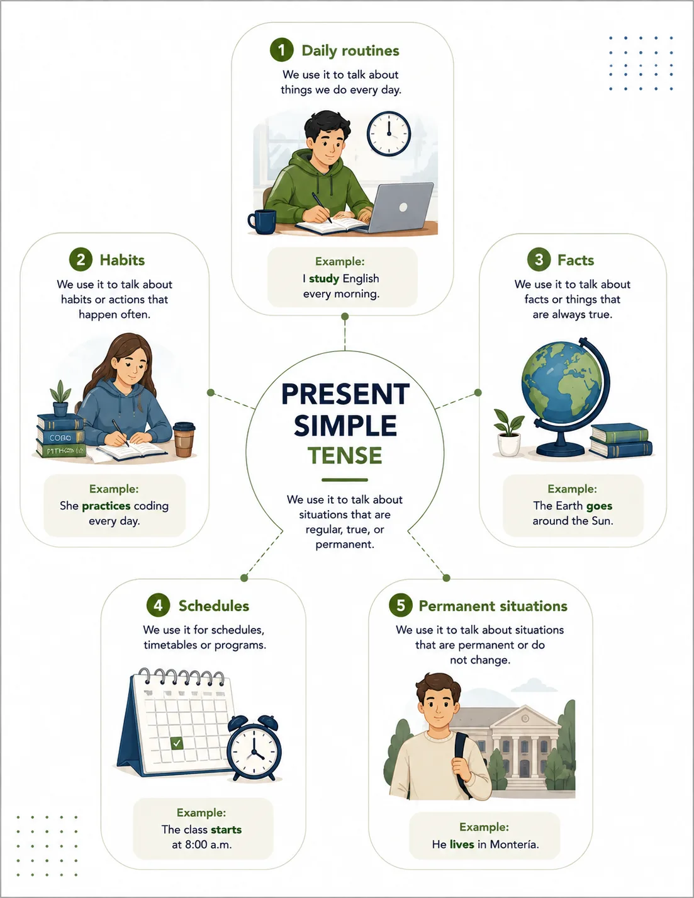
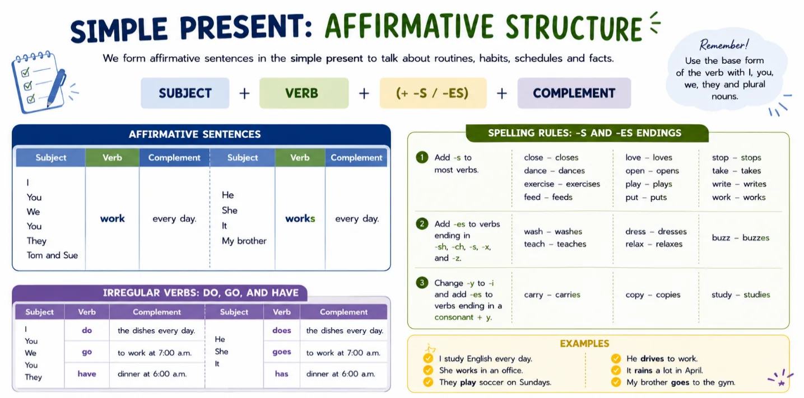
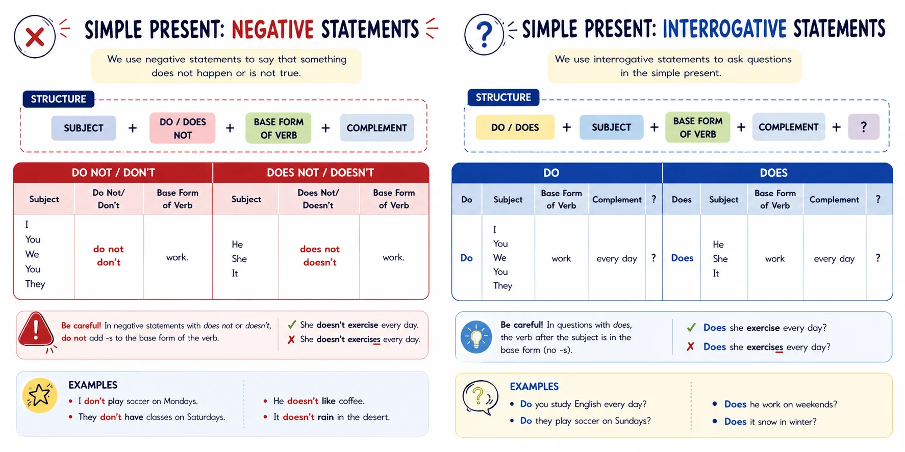
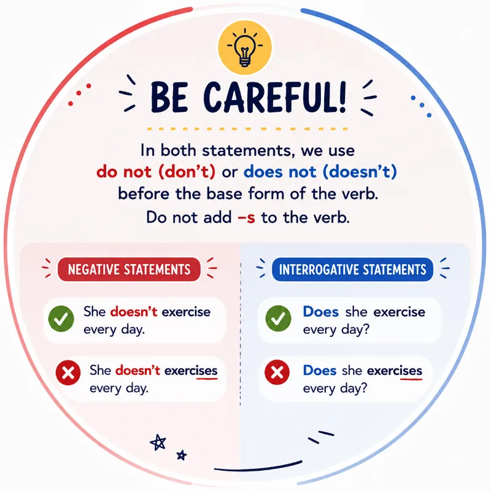
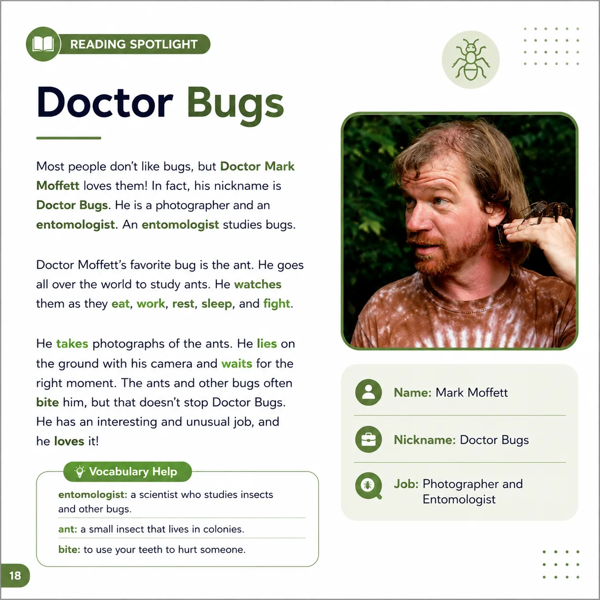
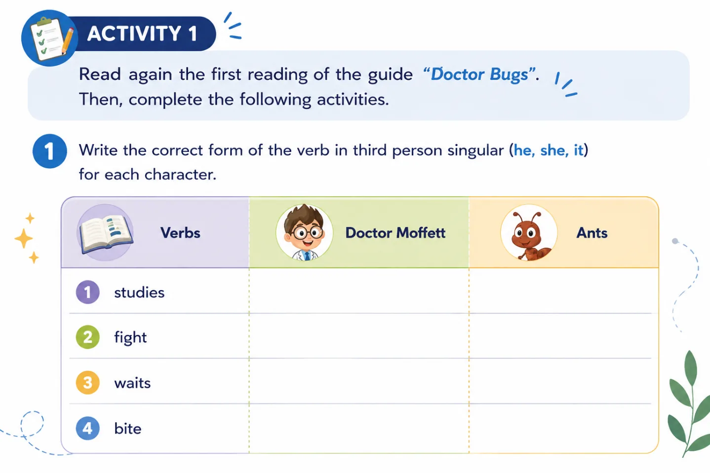
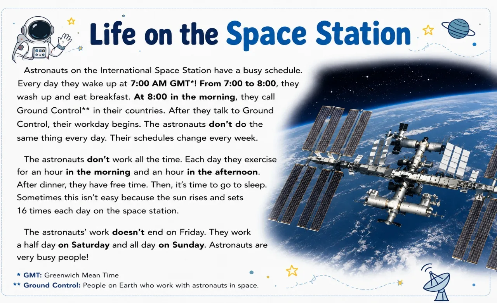

🔁 I code, she codes, we study: welcome to the Simple Present
Cada día realizas muchas actividades: asistes a clases, estudias, practicas programación, utilizas herramientas digitales y organizas tu tiempo para cumplir con tus responsabilidades. ¿Cómo expresarías todo esto en inglés?
En esta guía aprenderás a usar el Simple Present Tense, el tiempo verbal que permite hablar de rutinas, hábitos y hechos cotidianos. Mediante ejemplos sencillos, ilustraciones y actividades contextualizadas, desarrollarás las bases para comunicarte con mayor seguridad en situaciones académicas y relacionadas con el desarrollo de software.
✨ "I code. She codes. We study." Small changes, big meaning — let's master them. 💻

Objetivos de aprendizaje
- 🔁 Al finalizar esta guía, comprenderás y utilizarás el tiempo verbal Simple Present para describir rutinas diarias, hábitos de estudio, actividades académicas y situaciones cotidianas, comunicándote de manera clara y efectiva en contextos personales y relacionados con el aprendizaje de tecnología y programación.
🔍 Modo exploración: recorre las 5 estaciones y suma puntos
⭐ Puntos: 0
Actividades
🎮 Modo misión activado — completa las 4 misiones
🏅 Misiones: 0/4
📖 Handy references



📖 Reading Spotlight: Doctor Bugs
Read the article about Doctor Bugs. Notice the words in bold.

✅ Misión 1: Check

Write the correct form of the verb in third person singular (he, she, it) for Doctor Moffett, and in the base form for the Ants (they).
| Verb | Doctor Moffett (he) | Ants (they) |
|---|---|---|
| study | ||
| fight | ||
| wait | ||
| bite |
🔎 Misión 2: Discover
Look at the list of verbs in the article "Doctor Bugs". Then find other verbs from the reading and complete the table like the example.
| Doctor Moffett | Ants |
|---|---|
| goes (example) | eat (example) |
⭕ Misión 3: Circle
Circle the correct form of the verb to complete each sentence (write your choice in the blank).
🚀 Misión 4: Explore
Read the article about life on the International Space Station. Notice the words in bold.

Match each of the astronauts' activities with the correct time.
a. at 8:00 in the morning b. after dinner c. on Saturday d. from 7:00 to 8:00 in the morning e. for an hour in the morning and an hour in the afternoon
1. They wash up and have breakfast. ( d )
2. They talk to Ground Control. ( )
3. They exercise. ( )
4. They have some free time. ( )
5. They need to work a half day. ( )
Evaluación
Comprueba lo que has aprendido. Selecciona la respuesta correcta para cada pregunta.
Recursos para profundizar
Para ampliar tu conocimiento, te recomendamos explorar los siguientes recursos:
-
Froggy Jumps: Present Simple Tense (Educaplay)
Juego interactivo con preguntas sobre el presente simple en inglés.
Ir al recurso -
Online ESL Games (Games to Learn English)
Colección de juegos gratuitos en línea para practicar inglés, incluyendo presente simple.
Ir al recurso -
Present Simple Bowling Game (ESL Kids World)
Juego tipo bolos para repasar la gramática y el vocabulario del presente simple.
Ir al recurso -
Simple Present – 3rd Person -s – Exercise (Englisch-Hilfen)
Ejercicio de práctica para conjugar verbos en tercera persona singular del presente simple.
Ir al recurso
Bibliografía
https://ngl.cengage.com/assets/downloads/grex_pro0000000538/grex1_su3.pdf